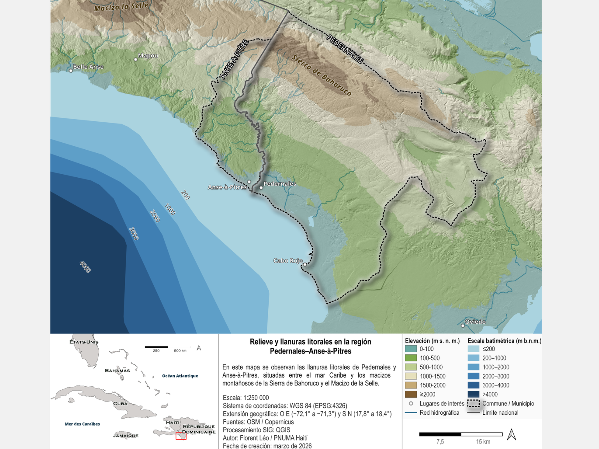

Enriquillo.
Un territorio,
una visión compartida.
Conectar naturaleza, turismo y oportunidades locales para construir un desarrollo territorial resiliente.
Una cartera de soluciones para dialogar con el Ministerio de Medio Ambiente y Recursos Naturales y construir una propuesta conjunta.
De las cuencas al litoral.

Ampliar el mapa ↗ · Fuente: presentación técnica PNUMA/OIM, 11 de marzo de 2026, p. 2. Cartografía: unidad SIG PNUMA Haití.El agua, los ecosistemas y las actividades económicas conectan el interior con la costa y ambos lados de la frontera.
La propuesta articula tres prioridades: gestionar las presiones del desarrollo turístico, conservar las infraestructuras naturales e integrar a las comunidades en las oportunidades económicas.
Este mapa contextualiza Pedernales y Anse-à-Pitres; no delimita el conjunto de la región Enriquillo ni un área de intervención aprobada.
Del conocimiento a la acción.
Elige un eje y una solución para explorar qué proponemos y qué necesitamos acordar.
Decidir juntos el siguiente paso.
Acordar los problemas, sitios y soluciones prioritarios; precisar el alcance territorial.
Definir socios, responsabilidades, resultados esperados, indicadores y costos.
Preparar una nota conceptual y explorar las vías de financiamiento apropiadas.
Definir prioridades nacionales, alcance territorial y arreglos institucionales de la propuesta.
Herramientas de información, criterios ambientales, soluciones basadas en la naturaleza y apoyo a políticas públicas.
Explorar intervenciones con comunidades, medios de vida e inclusión. Roles por acordar con las instituciones participantes.
Perspectiva de financiamiento
FEM / GEF
Se propone explorar una vía de financiamiento del Fondo para el Medio Ambiente Mundial. La elegibilidad, la ventana, la agencia, el presupuesto y el cofinanciamiento deberán definirse con los actores competentes. Esta propuesta no implica financiamiento aprobado ni compromiso institucional.